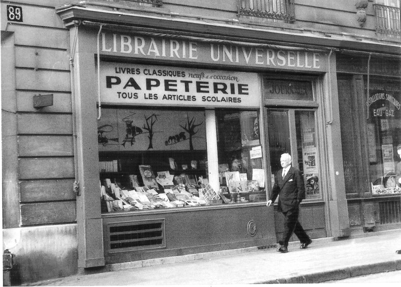

Autres actions importantes

Au début des années 40, Brossolette et sa femme rachètent une librarie au 89 Rue de la Pompe à Paris, qui servit de lieu de rencontre et de boîte aux lettres pour les résistants, grâce à une bibliothèque tournante au sous-sol.

Dans un discours à la BBC le 22 septembre 1942, Brossolette rend un hommage poignant aux «soutiers de la gloire». Il prendra la parole au micro de la BBC 38 fois, en remplacement de Maurice Schumann, et écrira de nombreux articles.